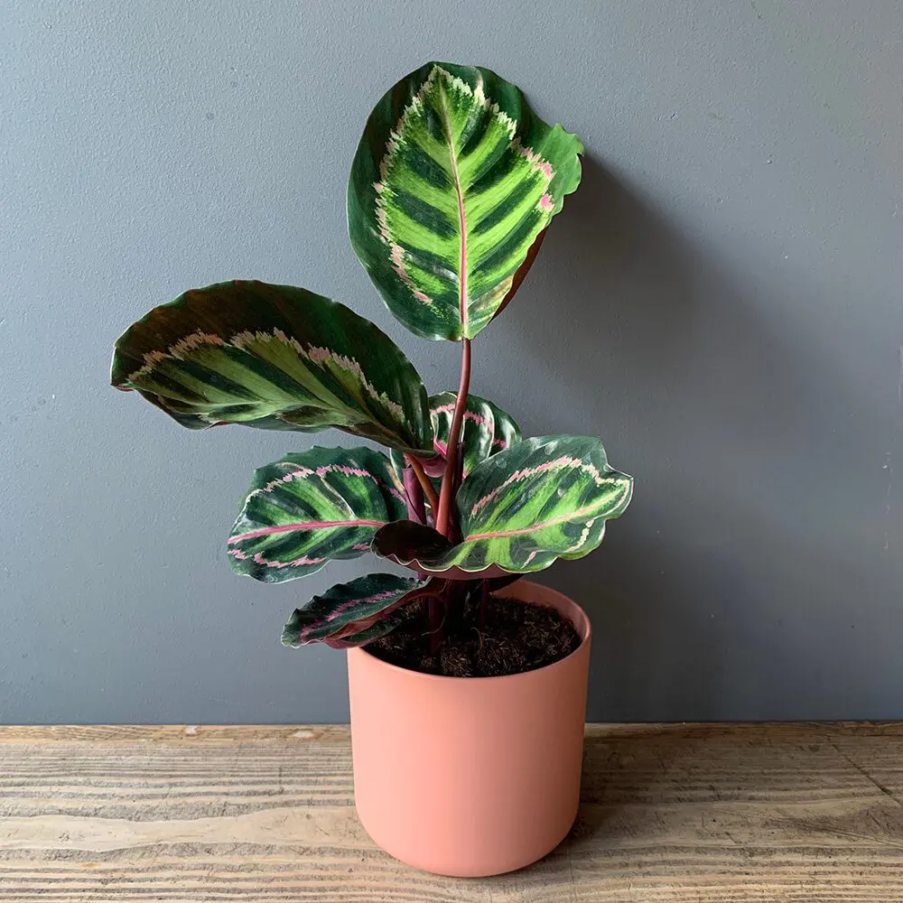

Leuk dat je kiest voor dit stekje!

Dit Roseopicta stekje is een plant met mooie paarse en roze bladsporen.
Deze plant wordt daarom ook wel de pauwenplant genoemd. Als het donker
wordt, kun je de plant horen knisperen als hij zijn blad sluit.